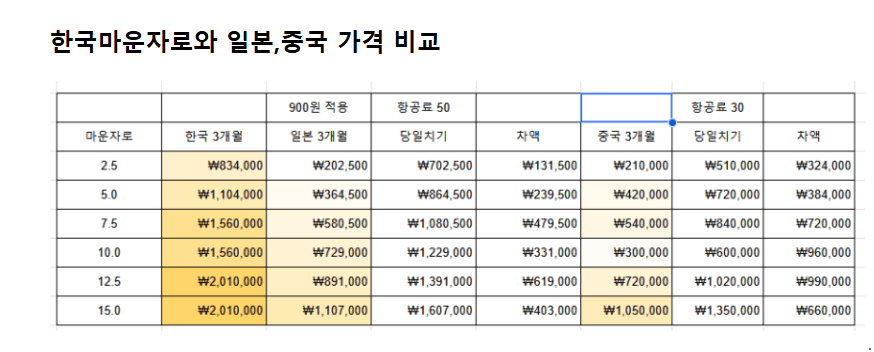

전부다 비급여 기준
국내 마운자로 3개월치 = 여행 + 마운자로 3개월치 가능

전부다 비급여 기준
국내 마운자로 3개월치 = 여행 + 마운자로 3개월치 가능
온라인 처방받아서 대마도로 배송받고 대마도 당일치기로 찾아오면 부산출발 기준으로 마운자로 5mg 3개월분 52만원이면 가져올 수 있겠네. 한국에서 사면 108만원.
배송을 어디로 받음
야마토운수 대마도 히타카츠 영업소
신기하네
한국에서 일본 비대면 진료 처방이 불법임
대마도에서 5일 이상 체류할거 아니면 문제될 수 있음
헉
한국만 왜이렇레 비싼건지 참
뒤졋다
이런 걸 영화로 만들어라
한국만 왜 이렇게 비싼거임??? 가격 차이가 너무 심한데
일본 살지만 저렇게 싼건 듣도 보도 못했는대...
엣 방금 일본 도쿄 성지 2.5mg 달에 7500엔
3개월치 예약했는데
가격 어디서 보는지 정보좀 알려주라
정보는 마운자로 갤러리에서 얻었고
홍보라고 할까봐 조심스럽긴한데 ㅅㅋㅋㄹㄴ이라고 이미 ㅈㄴ유명하더라
찾아봐야겠네 ㄳㄳ
중국 약에 공업용 알콜 타는거 아니지?ㅋㅋ
오늘 찾아봤는데 나고야 2.5mg 1달 12,000엔 이런게 싼거로 나오는데 어디서 가격보는거?
일반 클리닉에서는 도쿄가 가장 싸고 나고야는 상대적으로 비싼편임
비대면 진료 + 약품 배송 5일정도 걸리는데
일본 내에서도 비대면 진료 비교해서 최저가 찾아주는 사이트도 있어서 일본 거주자들은 그걸로 많이들 처방받음
중국은 10mg 왜이리 싸냐
오 몰랐음